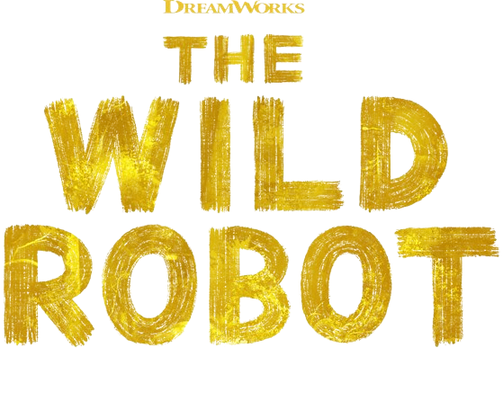

2024 | 1H 41M | 애니메이션, SF, 가족
“이 비행은 너에게 주는 선물이야”
우연한 사고로 거대한 야생에 불시착한 로봇 '로즈'는 주변 동물들의
행동을 배우며 낯선 환경 속에 적응해 가던 중, 사고로 세상에 홀로
남겨진 아기 기러기 '브라이트빌'의 보호자가 된다. ‘로즈'는 입력되어
있지 않은 새로운 역할과 관계에 낯선 감정을 마주하고 겨울이 오기 전에
남쪽으로 떠나야 하는 '브라이트빌'을 위해 동물들의 도움을 받아 이주를 위한
생존 기술을 가르쳐준다. 그러나 선천적으로 몸집이 작은 '브라이트빌'은 짧은
비행도 힘겨워 하는데... 로봇 '로즈'와 아기 기러기 '브라이트빌'은 특별한
기적을 일으킬 수 있을까?
감독 | 크리스 샌더스
좋아하는 코멘트
입력되지 않고 쌓아올린 프로그래밍이 우리에게 있어 가장 만족스러웠다.
- 왓챠피디아 'Red&Yellow'